[PROJECT THREE]
Part A1: Shoot the Picture
These pairs of images share the same center of projection as they were taken by rotating the phone camera instead of translating the phone. Thus, the pencil of rays are the same, allowing the image pairs to be related by homography.
Part A2: Recover Homographies
The points of correspondence were manually labelled on pixspy.com and stored as arrays. Corners or notieceable features were chosen to ensure high pixel choosing accuracy, which greatly affects the quality of the output image.


A homography means that point (x,y) on image 1 can be mapped to point (x',y') on second image by H, which forms the following relationship after normalisation:

By substituting the coordinates of points of correspondence into the equation and expressing in the form of Ah=0, the system of equations can be obtained. Each point of correspondence gives 2 equations. With 10 point pairs, I will have 20 equations for 9 unknown h values, which makes an overdetermined system. Thus, the system should be solved using least-squares method. Here are a few equations:

Recovered 3x3 homography matrix for hallway photos:

Part A3: Warp the Images
warpImageNearestNeighbor(im, H) and warpImageBilinear(im, H) were implemented using inverse warping. Inverse warping uses interpolation and ensures every pixel in the output image has a colour assigned to it. This prevents visual defects like black pixels/holes, which happens in forward warping.

Conceptually, the results of nearest neighbours and bilinear differ based on clarity of output image. Since nearest neighbours round coordinates to the nearest pixel value, the results might appear more blocky, with edges looking more jagged. Bilinear uses the weighted average of the 4 neighbouring pixels, which results in a smoother blend between the pixels' colours.

Image Rectification:
Comparing the source image, nearest neighbours and bilinear interpolation, the difference is minute. Upon closer look, the bilinear image is observed to appear smoother than the nearest neighbours. This difference will probably be more stark if the source images have distinct edges/patterns.
Part A4: Blend the Images into a Mosaic
In this part, the images related by homography are blended into a mosaic, stitched at the points of correspondence. To give off the panoramic effect, weighted averaging of the pixels is used to reduce edge artifacts. The outputs are:

Some parts of the output image are unclear (e.g. tree leaves in the above image), potentially due to a lack of points of correspondence in the tree leaves area, or motion of the leaves when capturing the photos.


Procedure
I wanted to leave the right side image unwarped, and only warp the left side image to the right's projection. Thus, a transformation for the left image needs to be derived, to allow the 2 images to blend seamlessly.
The first step was to find the points of correspondence, which were found in earlier parts. However, since I downscaled the image's size to reduce computational running time, these points also needed to be scaled down, producing im1_small, im2_small, im1_pts_scaled and im2_pts_scaled. These points tell us "this feature in im1 is the same as this feature in im2".
Next, the homography matrix was computed using the computeH function. I observed this downscaled homography matrix was different from that of the original image, which shows that homography is specific to pixel coordinates, rather than being a scaling constant.
Using inverse warping and by implementing bilinear interpolation, a smooth and complete output warped leftside image can be achieved. However, when warping an image, it might shift outside the original coordinate system, so it is necessary to bound the warp. The warp_bound() function transforms the 4 corners of the image and finds the min/max coordinates, which determines the canvas size. A translation matrix T is used to translate/offset the warped image if it has negative coordinates. This ensures all pixels have positive coordinates on the canvas.

Last, the images are blended together with feathering to smoothen the edges and seamlessly stitch the images together. A naive overlay would result in visible seams due to exposure differences, slight misalignments from inaccurate pixel selections etc. To soften this overlap region, the pixels were blended based on their distance from edges. (i.e Pixels closer to image 1's edge get more contribution from image 2). This weighted average blending method creates a smooth, seamless transition betweeen the 2 images.

Part B1: Harris Corner Detection
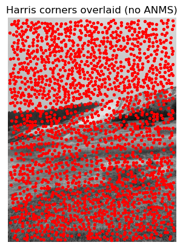
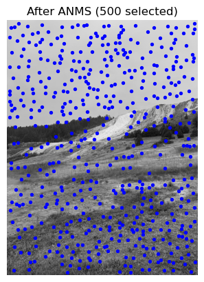
The core principle of Harris's corner detection is to find pixels where the local gradient varies strongly in both x and y directions. Without Adaptive Non-Maximal Suppression (ANMS), the detected corners are very dense, which provides uneven amount of information.
After ANMS, only 500 corners with the strongest corner strength function (below) were selected.
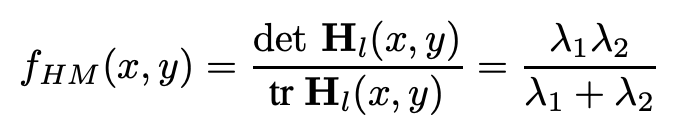
To decide which corners to select, the neighbours and space around each pixel are also taken into account. Thus, a strong corner in a weak area is prioritised over a strong corner in a strong area. This results in sparser corners detected,
allowing for more holistic homography to be computed.
Part B2: Feature Descriptor Extraction
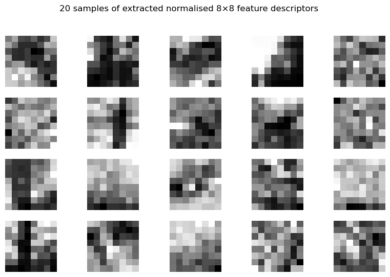
These are 20 samples of 8x8 patches (from 40x40 windows) from the glacier image.
Part B3: Feature Matching
Finding the right threshold using Lowe's thresholding ratio was particularly interesting because different images required different thresholds, depending on what elements were present in the image.
The ratio (r) tries to ensure that the match found is significantly better than the second best, and the match is only accepted if the r < threshold.
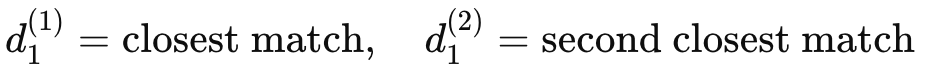
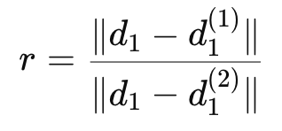
According to figure 6b in the research paper, the best threshold is around 0.6-0.7, as there is a good mix/overlap of correct and incorrect points.
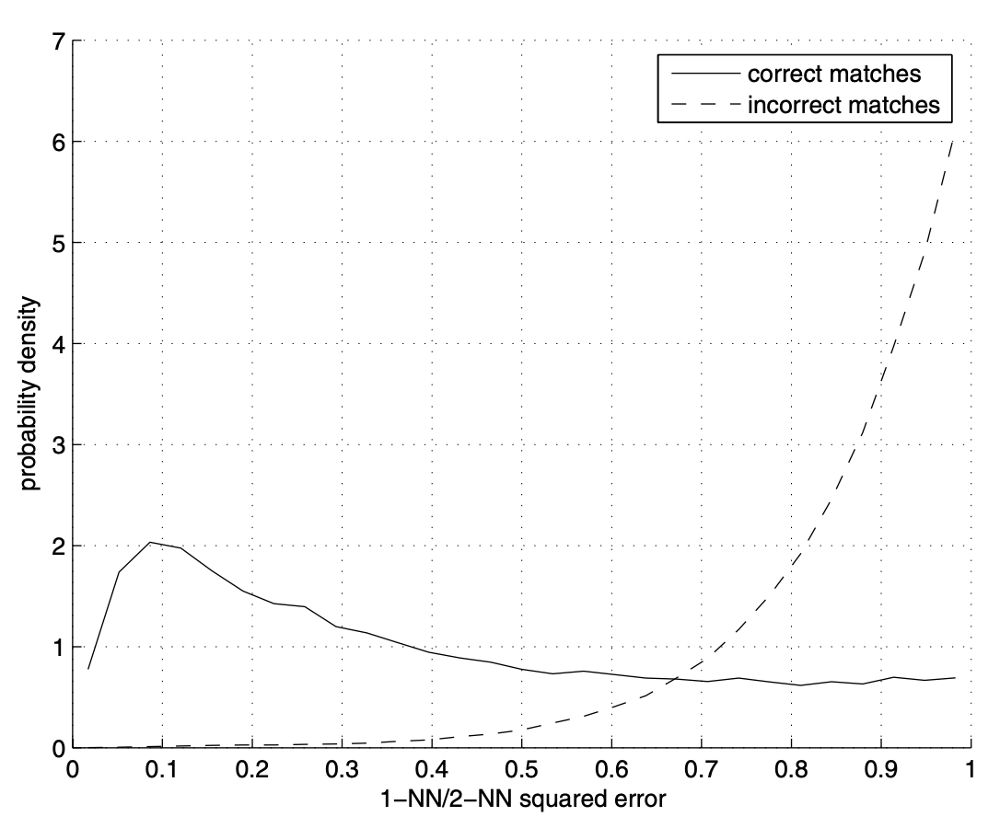
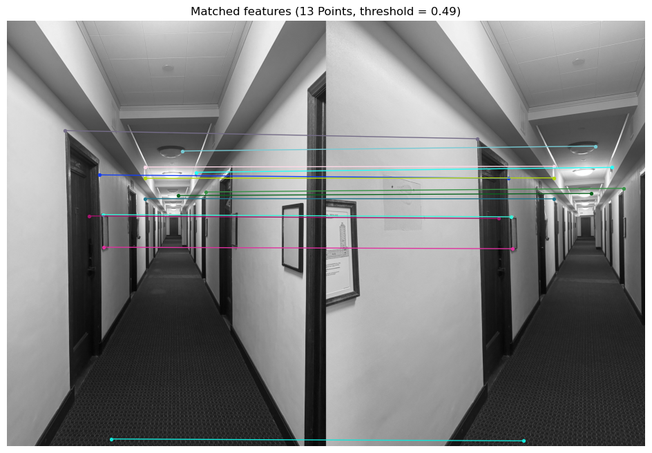
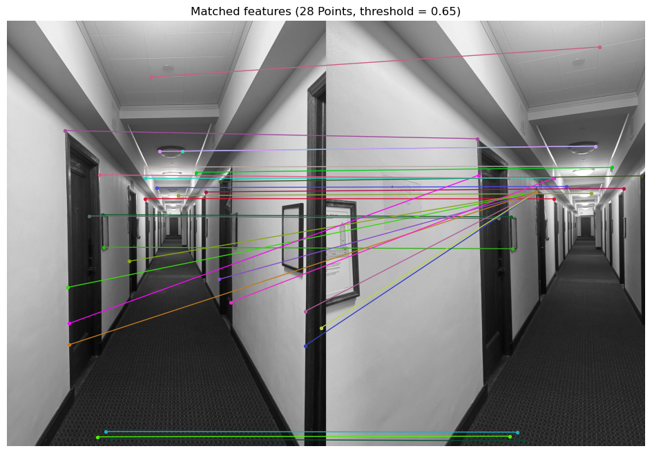
In the right image where threshold is 0.65, we see the results align with figure 6b, as there are numerous incorrect matches, such as matching the edge of the door frame to the ceiling.
When the threshold is lowered to 0.49 (left image),most matches are correct but they are not spread out across the image, which may not give us a very good mosaic.
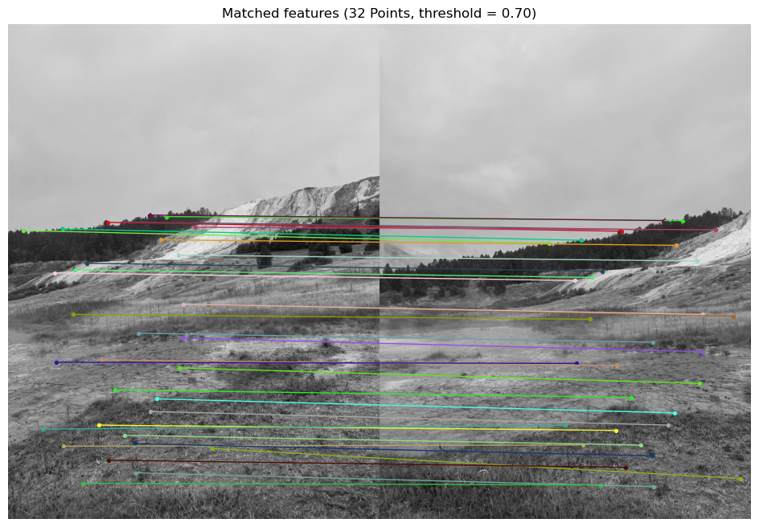
However, on another set of images, a threshold of 0.70 was able to match many features correctly, which was unexpected. I also noticed how good the auto-feature matching was, as it could differentiate between all the details in the grass, which a manual matcher (me!) cannot do. This shows that different features/image compositions require different thresholds, and the program will perform better on certain images than on others.
Part B4: RANSAC for Robust Homography
Applying 4-point RANSAC will help to filter the matches even more, as outliers (incorrect matches) are removed. It is important to remove outliers as they will affect the homography matrix, which ultimately affects the least-squares computation and mosaic blending. RANSAC works by picking (4) random samples and fitting models over pairs of points. For each pair, reprojection error is calculated. If this error < threshold, the point is an inlier.
This is a iterative process, and the model with the highest number of inliers (aka smallest total error) will be the final homography matrix.
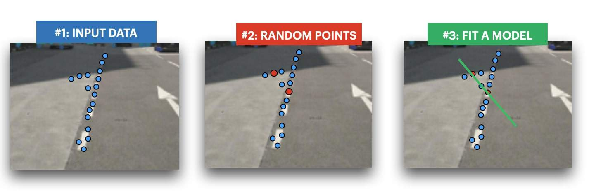
Because RANSAC is random, each run may produce a different number of inliers, and adjusting the number of iterations and threshold controls the robustness of RANSAC. I adjusted the parameters to attain an inlier % of about 25~35% (empirical), as I find this gives the best results.

RANSAC Glacier:

Manual Glacier:
Difference: The most noticeable difference is in the grass patch at the foreground. In the ransac, the blades of grass and mud were extremely clear, sharp and defined! In the manual mosaic, the grass was blurry due to the lack of points of correspondence in that area, as it is hard to pinpoint the exact pixels in a grass patch with the human eye.
RANSAC Hallway:
Manual Hallway:
Difference: For the hallway, the lights in the ransac hallway are clearer than those in the manual mosaic. The flooring pattern is also more defined in the ransac image, with the squares in certain areas being more distinct. However, the manual points picked were probably more strategic, as I picked more points on the door frame, which helps the door frames in the manual mosaic look clearer than the ransac ones.
RANSAC Campus:
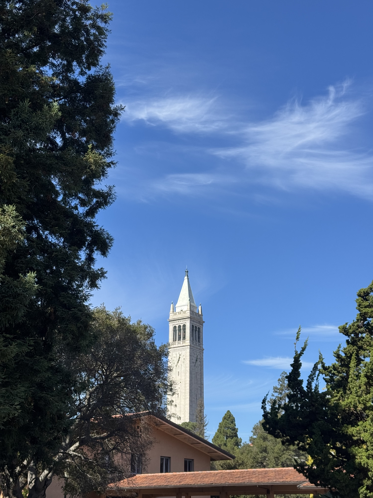
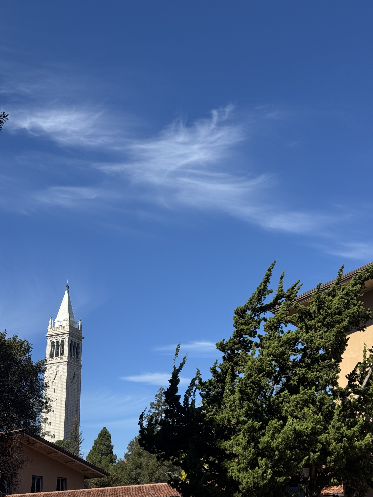
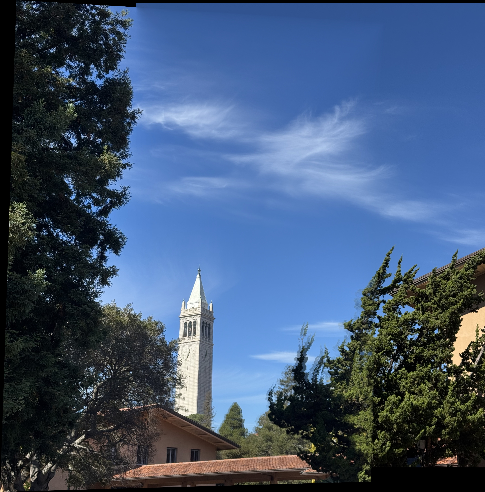
Something interesting I noticed was that tree leaves are really distracting for the computer. If the tree takes up a large part of the shared FOV between the 2 images, the computer loves to choose the matched features to be the tree leaves, instead of other more distinct corners like the campanile. Even when the threshold increased, the corners of the campanile remained unselected. This is probably because the contrast between the leaves and the background is much greater.
RANSAC Desk:
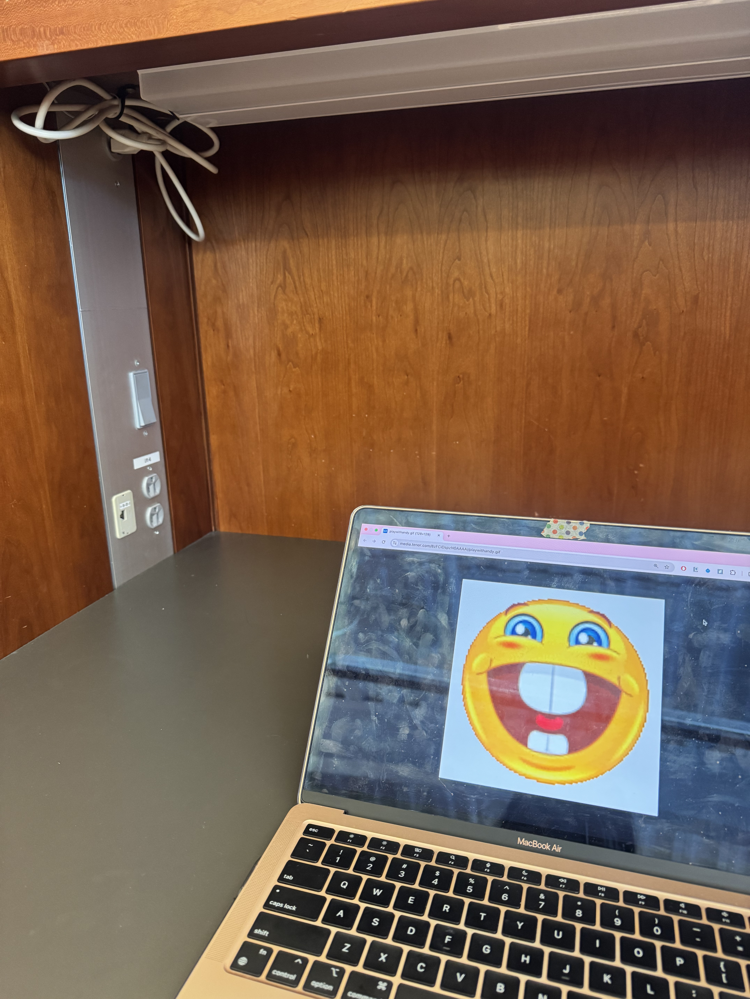
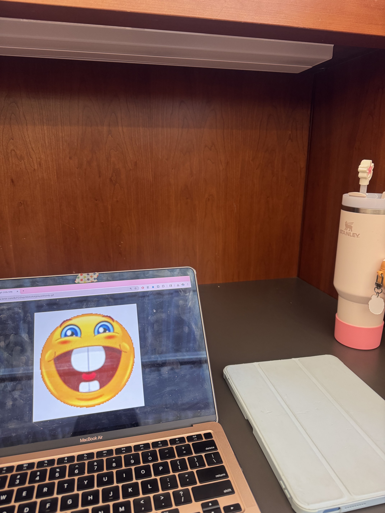

This set of images surprised me because the smiley face is still perfectly round, yet the computer looks distorted. There was also less matched features (only 9) for this image, and none of the matches were points on the smiley face. Yet, the output came out really nice!
I think it is safe to conclude auto-stitching does a better job than manual stitching. Not just because it is more time-efficient, but also because it produces better results, as long as the parameters and thresholds are appropriate, and images have distinct features.